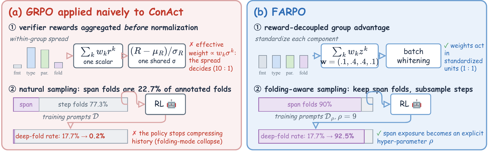
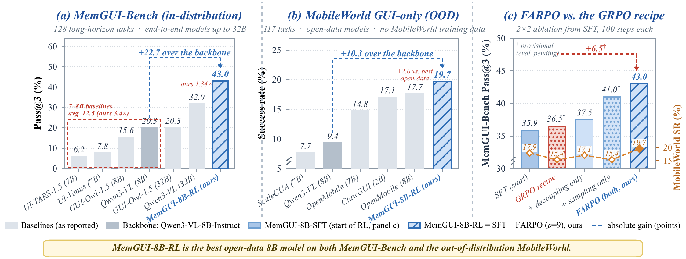
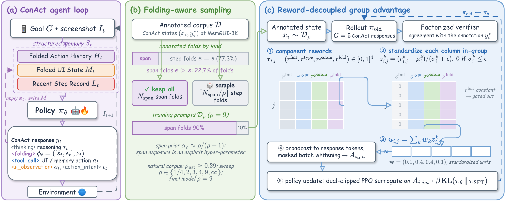
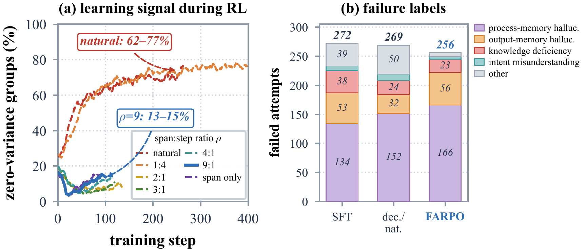
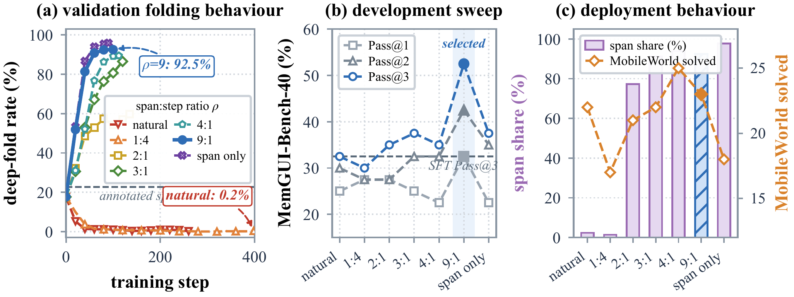
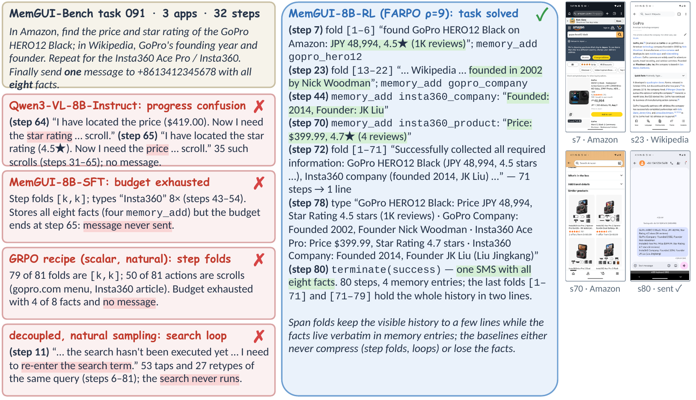

Up from 35.9% for MemGUI-8B-SFT (+19.8% relative) and more than double the Qwen3-VL-8B-Instruct backbone (20.3%).
Core Idea
Two properties of policy-managed memory break the naive GRPO recipe.
A Context-as-Action (ConAct) policy folds its own history, updates its UI memory and emits the next GUI action in one response. Annotation-based verifiers score that response with several components, and the components behave very differently: (1) aggregating them before normalisation lets the component with the largest within-group spread decide the update, and (2) span-level history folds are only 22.7% of the annotated folds, so natural sampling collapses the policy to step-only folding.

Results
MemGUI-8B-RL: the best open-data 8B model on both long-horizon benchmarks.

IRR rises from 30.2% (+15.9% relative); the largest gains land on cross-application tasks.
Out-of-distribution transfer without any MobileWorld rollout in training (SFT: 17.9%).
Folding exposure is a hyper-parameter: below ρ≈2 the policy folds step by step, above it span folds dominate.
Method
FARPO fixes which candidates are compared and which decisions the policy sees.


Reward-decoupled group advantages
Following GDPO, every verifier component is centred and scaled within its prompt group before the preference weights are applied, so a one-standard-deviation change in the format component and in the folding component move the advantage by the same amount. Zero-variance components are gated out instead of adding noise, and batch whitening keeps the response ordering.

Folding-aware sampling
Span folds are rare and step folds are already solved by the SFT policy, so most prompt groups carry no learning signal under natural sampling. FARPO keeps every span example and draws mρ = min{Nstep, ⌈Nspan/ρ⌉} step examples, which lifts the share of informative groups from 25–33% to 62–77% and turns folding exposure into an explicit, bimodal hyper-parameter.

Case Study
Span folds and explicit memory survive an 80-step task.
The base model loops between "I have the price, now I need the rating" and "I have the rating, now I need the price" for 35 steps. The SFT policy and the GRPO recipe fold every step separately and exhaust their step budgets before Messages is opened. Reward decoupling without folding-aware sampling never leaves the search box. MemGUI-8B-RL folds each sub-task into one line, adds four memory entries and sends one SMS with all eight facts.
Open Release
Everything needed to reproduce the post-training.
CodeFARPO trainer (reward-decoupled estimator, folding-aware sampler, ConAct verifier) and the launch scripts of every reported run.
ModelMemGUI-8B-RL, the FARPO (ρ = 9) checkpoint post-trained from MemGUI-8B-SFT.
Training dataAnnotated MemGUI-3K states in the RL conversation format, with the train / held-out split used in the paper.
Evaluation logsMemGUI-Bench and MobileWorld trajectories and judge outputs for every model row in the paper.
MemGUI-8B-SFT, MemGUI-3K and the ConAct interface are inherited from the MemGUI-Agent release; MemGUI-Bench and MobileWorld are used with their public harnesses.